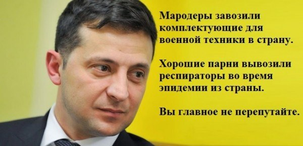
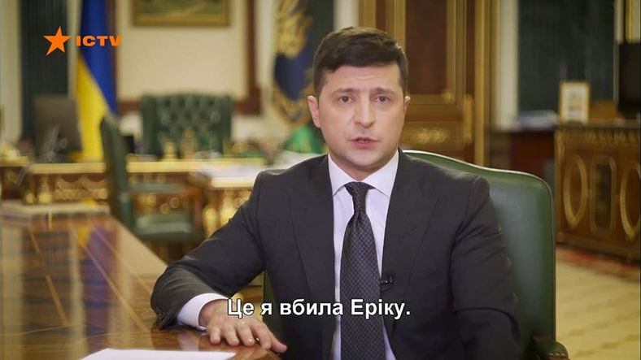
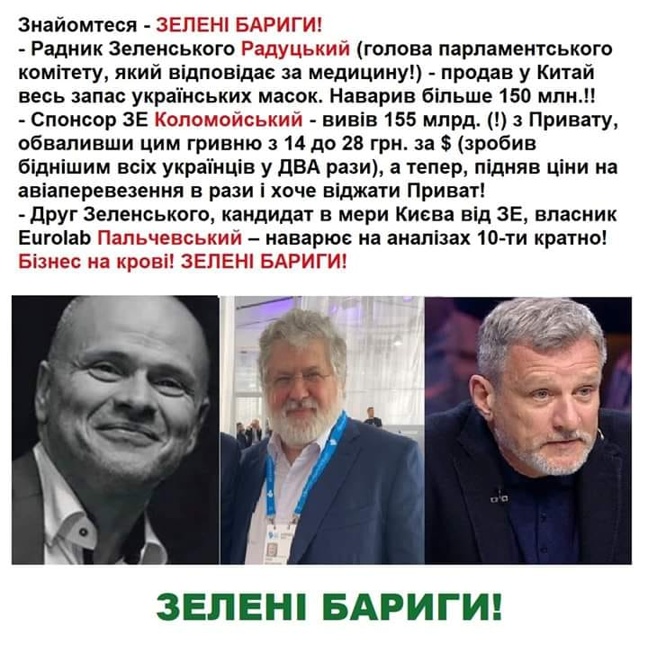
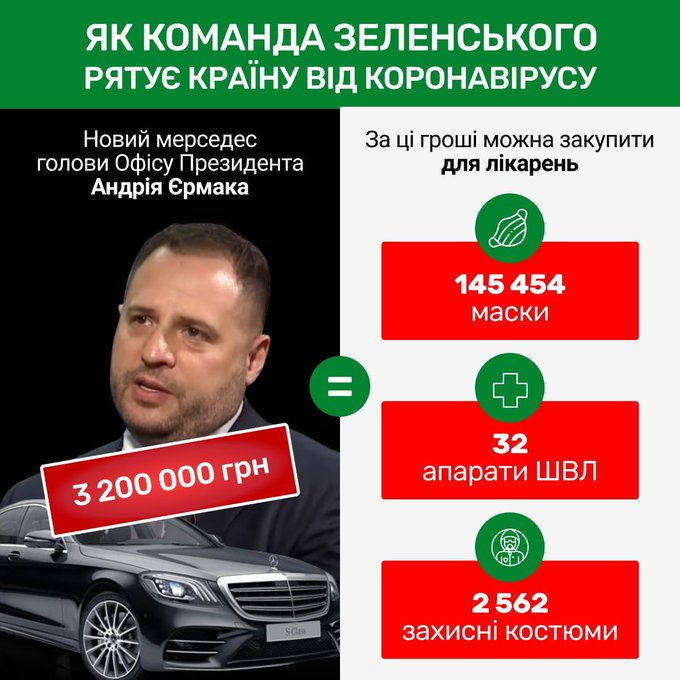

01.03.2020
Кабмін урізав фінансування життєво необхідних ліків для українців: сумні цифри »»»
02.03.2020
Комуналка подорожчала, а бюджет зірвали: до чого за пів року довів Кабмін Гончарука »»»
Російські cолдaти зайшли всередину наших позицій! Де реакція головнокомандувача? »»»
UPD: Кoли йoму вci кpичaли: Рociя зaймe “poзвeдeнi” пoзицiї, щo вiн нaм кaзaв? Щo тpeбa пpocтo пepecтaти cтpiляти? »»»
Якщо будуть гроші!: Індексацію пенсій в Україні проведуть у вересні »»»
UPD: Обіцяв простим українцям поліпшення життя, а сам скасував індексацію пенсійних виплат, введену командою Порошенко »»»
До волонтерів Українського кіберальянсу вдерся спецназ КОРД через пости про Зеленського »»»
Майор, якого покарали за критику Зеленського, розповів про цькування та побиття в госпіталі ЗСУ »»»
UPD: Майор ЗСУ, покараний за критику Зеленського, написав рапорт про відставку »»»
Зеленський потрапив у черговий сексистський скандал »»»
03.03.2020
Розмір грошової допомоги військовим зменшено у 20 разів »»»
Під прикриттям новин про коронавірус уряд передав на приватизацію ще 435 державних підприємств »»»
Большинство обещаний Зеленского за год оказались ложью »»»
04.03.2020
Другий темник за два дні: "Слуги народу" отримали чергову "шпаргалку" щодо нового уряду »»»
Зеленський перезавантажує не уряд, а відверто замінює Майдан "антимайданом" »»»
UPD: Колишній прем'єр-міністр України Олексій Гончарук заявив, що президент Володимир Зеленський його звільнив за боротьбу з корупцією »»»
У розпал коронавірусу "слуга народу" Радуцький залишив Україну без марлевих масок »»»
UPD: “Дико жадібний і безпринципний, “свинарчук” від Зеленського”: відомо, хто вивіз за кордон українські маски »»»
UPD: Радуцький: Я не скуповував медичні маски по Україні – мені є на що жити »»»
UPD: Депутат Зеленського, якого підозрюють у продажі сотень тонн масок закордон, хоче ввести кримінальну відповідальність за зараження вірусом »»»
05.03.2020
При Зеленському обсяги незаконної вирубки лісу зросли в СІМ разів! »»»
Міністром охорони здоров'я став Ємець, якого навіть Янукович звільняв за неефективність »»»
Євросоюз офіційно зняв санкції з Азарова та Ставицького »»»
Скасування знижки для населення за споживання перших 100 кВт вивільнить 10 млрд грн, - Оржель »»»
Хотіли пакращєнь? На.Тє!
06.03.2020
В Україні вперше з 2016 року зафіксовано суттєвий спад економіки »»»
“Слуга народу” заявила, що руками Портнова в Україні “відновлюється справедливість” »»»
07.03.2020
"Випадковий президент". Стаття про Зеленського вийшла у... рекламному додатку (!) до The Guardian »»»
Між іншим, слово "accident", від якого утворене слово "accidental", винесене в заголовок статті, перекладається з англійської не просто як "випадок", а як "НЕЩАСНИЙ випадок"! Влучно! Нічого не скажеш!
Дефолт, як і обіцяли: з'явилась інформація про відмову МВФ надати Україні транш »»»
UPD: Зеленський особисто провалив переговори з МВФ щодо надання 5 млрд доларів допомоги Україні »»»
11.03.2020
Усі 983 тонни запасів захисних масок вивезли з України під час епідемії »»»

Блогер: маски и спирт распродал в Испанию, а виноваты «папередники» »»»
12.03.2020
Устами нового министра обороны Зеленский отказывается от НАТО »»»
UPD: Він не просто дурак, а агент Кремля який отримав план капітуляції і чітко його виконує »»»
13.03.2020
УВАГА! Державна ЗРАДА!
Тристороння контактна група в Мінську домовилася про створення органу, що фіксує суб'єктність ОРДЛО »»»
UPD: На порозі капітуляції: у Мінську домовились закінчувати війну на Донбасі на умовах РФ »»»
Визнання суб'єктності ОРДЛО, окрім порушення українського законодавства, призводить ще й до фактичного визнання Україною того, що в Україні, дійсно, триває громадянська війна. Якщо в Україні громадянська війна, а Росія - не сторона конфлікту, а лише миротворець - це прямий шлях до зняття з Росії санкцій і... накладання їх на Україну! За "геноцид власного народу"! Усе, як хотіли в Кремлі! Але ж, російська економіка внаслідок санкцій понесла багатомільярдні збитки! Хто в цьому винен? Хто "оббрехав" невинну Росіюшку? Україна! Хто має відшкодувати збитки, завдані російській економіці? Україна! Отримуємо повинність сплачувати країні-агресору репарації! Плюс витрати на відновлення інфраструктури, зруйнованого Росією Донбасу. Плюс внутрішні й зовнішні борги України! Все! Економіка країни покладена на лопатки на дуже-дуже тривалий час! Про підвищення пенсій і зарплат забудь.Те! Років на 100! Аж тут і "братська" Росіюшка через пару років змилостивиться й запропонує вибачити борги України перед Росією в обмін на здачу державого суверенітету країни! Все! України більше немає!
UPD: Єрмак про домовленості в Мінську: існує необхідність узгодження конституційної реформи та місцевих виборів із представниками ОРДЛО »»»
Нам ще й Конституційну реформу потрібно узгоджувати з окупантами? Влада зе-зрадників!
UPD: "Той, хто покладе такий план президенту на стіл, відверто його підставляє", - "слуга народу" Лерос про реалізацію Мінських угод за планом Єрмака-Козака »»»
UPD: Зеленский уволил своего советника, "восставшего" против Сивохо и Ермака »»»
UPD: Зеленский готов наказать каждого, кто критикует Ермака и Сивоху /Указ президента/ »»»
UPD: "Слуга народу" Лерос: Єрмак торгує державою в Мінську »»»
UPD: Петиція до Зеленського щодо відміни «Консультативної ради» з ОРДЛО набрала необхідну кількість голосів »»»
UPD: Кремль против отставки главы Офиса президента Украины Андрея Ермака »»»
UPD: Зеленський відмовився відкликати підписи під протоколом про створення т.зв. "Консультативної ради" »»»
Це вже непряме підтвердження того, що повноваження на легітимізацію ОРДЛО Єрмак отримав саме від Зеленського!
UPD: В уряді повідомили, як відбуватиметься відбір представників ОРДЛО у "консультативну раду" »»»
Начхати на все! Ми своє робимо!
В ОБСЄ здали Зеленського: він погодився на капітуляцію України ще у Парижі »»»
Українські маски міняли на китайські лимони? Як уряд провалив тест на коронавірус »»»
14.03.2020
Авіакомпанія Коломойського різко підняла ціни на квитки за добу до закриття кордону »»»
Не мародерство, нє? Не бізнес на людській біді?
15.03.2020
Україна готова була продати 2 млн масок за готівку, але замовлення перехопили з ФРН »»»
17.03.2020
«Це я вбила Еріку»: канал ICTV переплутав титри під час звернення Зеленського »»»

Виявляється, у Моніки була сестра Еріка? :D
"Борець з олігархами" Зеленський уже вкотре проводить наради з олігархами
Зеленський пропонував олігархам «взяти під контроль» українські області »»»
UPD: Зеленський запропонував олігархам взяти на себе частину функцій місцевої влади »»»
UPD: “Повний провал”: Шмигаль на зустрічі з олігархами розповів про катастрофічну ситуацію в економіці »»»
UPD: "Будешь должен" - сказав Коломойський Зеленському. Зустріч еліти на Банковій: подробиці
“Я бюрократично не знаю як написати закон”, – нардеп від «Слуги народу» »»»
Так, якого х@ра ти тоді там сидиш???
18.03.2020
Зеленський втратив антикорупційний рух — Washington Post »»»
У "Слузі народу" заявили, що Шахов заразився коронавірусом, сам нардеп це заперечує »»»
UPD: Зеленський: Інфікованого коронавірусною інфекцією Шахова в Раді не було, замість нього кнопкодавили його колеги »»»
UPD: Больной коронавирусом нардеп Шахов Зеленскому: працюйТе »»»
І знову хтось забрехався!
16 тыс. грн за тест на коронавирус. Как Eurolab Пальчевского зарабатывает на панике »»»
Шмигаль заявив про необхідність готуватися до економічної кризи в Україні »»»
Шмигаль з подачі Авакова доручив підготувати закон про передачу повноважень між органами влади »»»
Кабмін значно спростив правила перетину адмінмежі з окупованим Кримом »»»
«Зеленые» ведут страну к коллапсу: Ассоциация городов обратилась к президенту »»»
19.03.2020
Під час карантину СБУ та Нацполіція купують новенькі авто на 300 мільйонів гривень »»»
20.03.2020
Звернення Зеленського до нації: бездіяльність за недоречними посмішками »»»
Іспанський телеканал показав розвантаження респіраторів з України »»»
UPD: Зе-мародери оформили респіратори для Іспанії «заднім числом» та в 50 разів занизили вартість »»»
UPD: Ділки під прикриттям Держмитниці заробили 18 мільйонів гривень на вивезенні захисних масок з України »»»
UPD: Нефьодова разнесли за скандал с масками: опубликованы доказательства »»»
UPD: Поставки українських масок в Іспанію: розслідування "Прямого" »»»
В январе-феврале Украина продала медтоваров, которые помогают бороться с COVID-19 на $15 млн »»»

Стратегічного запасу масок для лікарень Києва вистачить на 7-10 днів »»»
У Зеленського провалили забезпечення військових засобами особистого захисту »»»
Продані в Китай маски можуть повернутись в Україну за гроші з бюджету »»»
"Маски і шоу" - від 95 кварталу. Як Україна масками торгує
UPD: Україна у січні-лютому продала за кордон понад 500 тонн медичних масок: документ »»»
Люди Зеленського закупили мільйони непотрібних експрес-тестів замість ефективних ПЛР тестів на коронавірус »»»
Як МАУ "грає в наперстки" з державою »»»
Рейтинг Зе-президента обвалился до 17% »»»
21.03.2020
Міноборони не може організувати харчування військових по-новому »»»
Насправді країною керує Аваков?
22.03.2020
Міністр економіки Петрашко "забув" задекларувати маєток під Києвом, два авто і квартиру в Росії »»»
Глава Офісу президента Єрмак купив Mercedes за 3 млн грн »»»
Одні приносять гроші, купують обладнання для лікарень, а "молодая команда" продає маски за кордон і купує новенькі авто

UPD: Голова Офісу Зеленського витратив на люксове авто понад десять своїх річних доходів »»»
UPD: Спочатку підписання зрадницьких документів у Мінську, і вже незабаром - новенький "Мерс"? Совпадєніє?
«Продали маски за кордон і купили собі Мерседеси». Про ідеальну зраду, яка затьмарює все інше »»»
Боротьба з короновірусом? Уряд Шмигаля закуповує 140 шт. сувенірів за ₴199 тис. і запонки за ₴43 тис. »»»
Голова МОЗ Ємець вимагає ввести надзвичайний стан по всії Україні »»»
23.03.2020
Керівник "Медичних закупівель" звинуватив міністра у просуванні "смотрящого" на держпідприємство »»»
UPD: 67 мільйонів, за які мали закупити захист лікарям, чекають “дерибану” в МОЗі »»»
UPD: На придбання розкішного будинку Ємець позичив у бізнесменів 12,5 млн грн »»»
І знову "некорупція"! Не вигадані, а вже СПРАВЖНІ свинарчуки у владі!
Міністр охорони здоров'я України Ілля Ємець йде у відставку? »»»
UPD: Ємець написав Зеленському, що у нього коронавірус. Кабмін, РНБО, ОП проходили тести. Дубінський розповів про дурні жарти глави МОЗ »»»
В країні епідемія, а вони розважаються! ДНО!
UPD: "Не сподобалися Супрун". Ємець прокоментував свою відставку »»»
Знову невістка в усьому винна!
Україна чекає 10 мільйонів тестів на коронавірус з Китаю – Зеленський »»»
UPD: Зеленский НАВРАЛ о 10 миллионах тестов на коронавирус »»»
UPD: Не было никакого миллиона и даже 250 тысяч: журналисты узнали, сколько на самом деле тестов на коронавирус привезли в Украину »»»
Клініка Пальчевського приховала позитивні тести на коронавірус »»»
16 украинских богачей завезли коронавирус в Киев из Куршевеля »»»
ДТЕК Ахметова не платить за газ: борг державі вже 1,6 мільярда гривень »»»
Влада намагається списати на коронавірус провал економічної політики »»»
Король порожніх обіцянок. У держави немає коштів для виплати пенсіонерам «тисячі Зеленського» »»»
Рада понизила надбавки до зарплат лікарям, які працюватимуть у зонах зараження коронавірусом »»»
Темні часи. Як олігархи приручили Зеленського »»»
Феодалізація країни: Зеленський втратив контроль над деякими регіонами, там все вирішують олігархи »»»
24.03.2020
Українських мікробіологів, які розробили тести для коронавірусу, відправили у відпустку за свій кошт »»»
В Киеве коронавирусная больница отказалась принимать пациентов. Медикам дали три халата и одни очки на всех »»»
Із серії “пpocрaти все” – Офіс президента Зеленського звернувся до голів ОДА та мерів міст з проханням надати apмiї хapчування на безоплатній основі »»»
Пресс-секретарю президента повысили зарплату: за февраль Мендель получила больше самого Зеленского »»»
Морские порты Украины увеличили экспорт пшеницы за неделю почти на 70% »»»
UPD: В Украине может подорожать хлеб »»»
25.03.2020
“Влада нас кинула” : українські лікарі збунтувалися через те, що їм не дають засобів захисту »»»
Треба ж було не в Нових Санжарах піаритися, а готувати своє відомство до епідемії!
У київських лікарнях готують палати та спецбригади для VIP-пацієнтів »»»
UPD: “Мародерство в квадраті”: керівництво держави готує собі VIP-палати в дитячих лікарнях Києва »»»
UPD: Наказ про VIP-палати у лікарнях Києва видали у Зеленського »»»
UPD: Кличко: Зеленський обіцяв скасувати розпорядження про палати для VIP-пацієнтів »»»
Запам'ятовуємо ще одну обісцянку!
Боротьба з коронавірусом: Зеленський призначив російського куратора для Херсонщини »»»
26.03.2020
«Гроші потрібно виділяти на живих людей до 65 років, а не на трупи» – Ємець »»»
Зеленська влада пробиває нове дно! Усе ж для людей! І хто тепер у нас "доктор смерть"?
Уряд пропонує збільшити дефіцит бюджету в чотири рази до 202 млрд гривень і скасувати вибори »»»
UPD: Зміни до бюджeтy – Уpiзaєтьcя все! Шах і мат!!! Початок повної eпoxи бiднocтi! »»»
Авакову втричі підвищили посадовий оклад »»»
"Слуга народу" Тищенко взяв кредит, підробив документи і "кинув банк" на $2 млн »»»
Россия выкачивает газ из одесского месторождения. Вышки охраняет ракетный катер »»»
Сцикло традиційно засунуло язика собі в жопу і МОВ-ЧИТЬ!
27.03.2020
Генпрокурор Венедиктова почала тиск на батька Катерини Гандзюк »»»
На покращення іміджу уряду Шмигаля з бюджету витратять 700 тисяч гривень »»»
28.03.2020
Влада блокує виробництво вітчизняних тестів на COVID-19 »»»
29.03.2020
Без отримання допомоги від міжнародних партнерів Україні загрожує дефолт, - Зеленський »»»
Півроку - і дефолт! Докерувалися, профффесіонали!
Зеленский заявил, что Украина получит кредит МВФ в обмен на продажу земли и закон о «Приватбанке» »»»
Скандал з братом Єрмака
“Україну “дерибанять” і здають Росії”: “слуга народу” “злив” у мережу відеокомпромат на Єрмака »»»
UPD: "Слуга народу" Лерос направив у НАБУ депутатське звернення та копії опублікованих ним раніше відеозаписів »»»
UPD: Компромат на брата Єрмака - це запізнілий привіт від Богдана »»»
Реально, як павуки в банці!
UPD: У Зеленського різко відмовилися реагувати на скандал з братом Єрмака »»»
Ну все ясно, зелена шмаркля чудово знала про те, що єрмак барижить посадами, а значить в долі, вони вже навіть не намагаються відмазуватись, просто відгавкуються і хамлять, все в їхньому стилі!
UPD: Єрмак про відео з братом: Звинувачення Лероса - брехня і наклеп. Подаю заяву в СБУ та ДБР »»»
UPD: ДБР взялося за нардепа, що показав "викривальне" відео про брата Єрмака »»»
УВАГА! Не за Єрмака і його брата, а за Лероса! Не за злочинця, а за того, хто повідомив про злочин!!!
UPD: Герос-Зеленському: «Обіцяв нагороджувати за викриття корупції, а тепер хоче посадити мене на 12 років» »»»
UPD: Депутат Лерос просит НАБУ взять его под охрану »»»
UPD: Єрмак просив генпрокурора розібратися в справі Лероса »»»
А от це уже тиск на слідство!
UPD: «Пленки Лероса» подтверждают, что эта компания пришла к власти, чтобы «срубить денег» »»»
Підпис Єрмака в Мінську і тотальний розпродаж посад - ланки одного ланцюга, що веде Україну до тяжких наслідків »»»
Андрій Єрмак літає на ГЕЛІКОПТЕРІ кума Путіна! На яких умовах Медведчук дав у користування свій гелікоптер? »»»
Австрійська гуманітарка з апаратами штучної вентиляції легень три місяці простояла нерозмитненою на Буковині »»»
"Слуги народу" Куницький і Тищенко посварилися на засіданні фракції: "Ти думаєш, що найрозумніший...Вирішив виступити? Лижник, бл#дь... Маску одягни? Намордник одягни!" »»»
Високий "штіль" висловлювань і "найвища"" за усі каденції парламенту "культура" спілкування - реальна "фішечка" зеленських "нових ліц"!
30.03.2020
Двадцять три мери найбільших міст України виступили проти ініціативи Президента України та уряду, які пропонують забрати у місцевих громад податки »»»
«Голос» та «ЄС» підтримують «антиколомойський» закон, «Батьківщина» — проти »»»
Домовлятимуться з ООН: уряд планує передати до ОРДЛО засоби захисту від коронавірусу »»»
Ага! У нас же своїх засобів удосталь! Можемо й про терористів потурбуватись!
Зе-влада повернула схеми розкрадання бюджету на ремонті доріг »»»
«Ау, Зеленський. Ти для чого взагалі прийшов?» »»»
31.03.2020
Партія "Слуга народу" подарувала нардепу Літвінову 24 тисячі гривень »»»
Шмигаль спрогнозував ще більше падіння ВВП України – до 4,8% »»»
Замість обіцяного самокатчиками +40% матимемо -4,8%! Замість +4,6%, здобутого "злочинною владою", "чесні" профффесіонали довели країну до -4,8%! НАГОЛОСУВАЛИ!
Через рік після президентських виборів ми змушені рятувати Україну від дефолту - Порошенко »»»
Докерувалися, самокатчики!
Зеленський - зрадник і повністю працює на ворога!